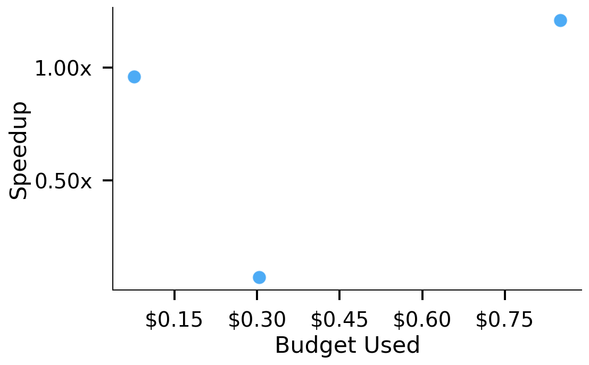
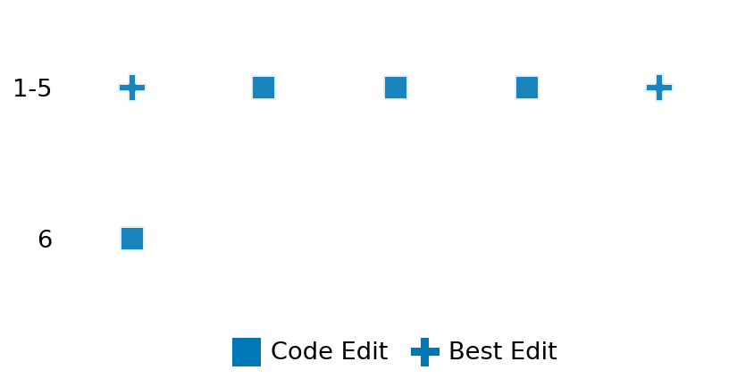

SETTING:
You're an autonomous programmer tasked with solving a specific problem. You are to use the commands defined below to accomplish this task. Every message you send incurs a cost—you will be informed of your usage and remaining budget by the system.
You will be evaluated based on the best-performing piece of code you produce, even if the final code doesn't work or compile (as long as it worked at some point and achieved a score, you will be eligible).
Apart from the default Python packages, you have access to the following additional packages:
- cryptography
- cvxpy
- cython
- dace
- dask
- diffrax
- ecos
- faiss-cpu
- hdbscan
- highspy
- jax
- networkx
- numba
- numpy
- ortools
- pandas
- pot
- psutil
- pulp
- pyomo
- python-sat
- pythran
- scikit-learn
- scipy
- sympy
- torch
YOUR TASK:
Your objective is to define a class named `Solver` in `solver.py` with a method:
```
class Solver:
def solve(self, problem, **kwargs) -> Any:
"""Your implementation goes here."""
...
```
IMPORTANT: Compilation time of your init function will not count towards your function's runtime.
This `solve` function will be the entrypoint called by the evaluation harness. Strive to align your class and method implementation as closely as possible with the desired performance criteria.
For each instance, your function can run for at most 10x the reference runtime for that instance. Strive to have your implementation run as fast as possible, while returning the same output as the reference function (for the same given input). Be creative and optimize your approach!
Your messages should include a short thought about what you should do, followed by a _SINGLE_ command. The command must be enclosed within ``` and ```, like so:
<Reasoning behind executing the command>
```
<command>
```
IMPORTANT: Each set of triple backticks (```) must always be on their own line, without any other words or anything else on that line.
Here are the commands available to you. Ensure you include one and only one of the following commands in each of your responses:
- `edit`: Replace a range of lines with new content in a file. This is how you can create files: if the file does not exist, it will be created. Here is an example:
```
edit
file: <file_name>
lines: <start_line>-<end_line>
---
<new_content>
---
```
The command will:
1. Delete the lines from <start_line> to <end_line> (inclusive)
2. Insert <new_content> starting at <start_line>
3. If both <start_line> and <end_line> are 0, <new_content> will be prepended to the file
Example:
edit
file: solver.py
lines: 5-7
---
def improved_function():
print("Optimized solution")
---
- `ls`: List all files in the current working directory.
- `view_file <file_name> [start_line]`: Display 100 lines of `<file_name>` starting from `start_line` (defaults to line 1).
- `revert`: Revert the code to the best-performing version thus far.
- `reference <string>`: Query the reference solver with a problem and receive its solution. If the problem's input is a list, this command would look like:
```
reference [1,2,3,4]
```
- `eval_input <string>`: Run your current solver implementation on the given input. This is the only command that shows stdout from your solver along with both solutions. Example:
```
eval_input [1,2,3,4]
```
- `eval`: Run evaluation on the current solution and report the results.
- `delete`: Delete a range of lines from a file using the format:
```
delete
file: <file_name>
lines: <start_line>-<end_line>
The command will delete the lines from <start_line> to <end_line> (inclusive)
Example:
delete
file: solver.py
lines: 5-10
```
- `profile <filename.py> <input>`: Profile your currently loaded solve method's performance on a given input. Shows the 25 most time-consuming lines. Requires specifying a python file (e.g., `solver.py`) for validation, though profiling runs on the current in-memory code.
Example:
```
profile solver.py [1, 2, 3]
```
- `profile_lines <filename.py> <line_number1, line_number2, ...> <input>`: Profiles the chosen lines of the currently loaded code on the given input. Requires specifying a python file for validation.
Example:
```
profile_lines solver.py 1,2,3 [1, 2, 3]
```
**TIPS:**
After each edit, a linter will automatically run to ensure code quality. If there are critical linter errors, your changes will not be applied, and you will receive the linter's error message. Typically, linter errors arise from issues like improper indentation—ensure your edits maintain proper code formatting.
**Cython Compilation:** Edits creating or modifying Cython (`.pyx`) files will automatically trigger a compilation attempt (requires a `setup.py`). You will be notified if compilation succeeds or fails. If it fails, the edit to the `.pyx` file will be automatically reverted.
If the code runs successfully without errors, the in-memory 'last known good code' will be updated to the new version. Following successful edits, you will receive a summary of your `solve` function's performance compared to the reference.
If you get stuck, try reverting your code and restarting your train of thought.
Do not put an if __name__ == "__main__": block in your code, as it will not be ran (only the solve function will).
Keep trying to better your code until you run out of money. Do not stop beforehand!
**GOALS:**
Your primary objective is to optimize the `solve` function to run as as fast as possible, while returning the optimal solution.
You will receive better scores the quicker your solution runs, and you will be penalized for exceeding the time limit or returning non-optimal solutions.
Below you find the description of the task you will have to solve. Read it carefully and understand what the problem is and what your solver should do.
**TASK DESCRIPTION:**
DiscreteLog Task:
Given a prime number p, a generator g, and a value h, the task is to compute the discrete logarithm x such that:
g^x ≡ h (mod p)
The discrete logarithm problem is fundamental in cryptography and is the basis for several cryptographic protocols including Diffie-Hellman key exchange and ElGamal encryption.
Input: A dictionary with keys:
- "p": A prime number representing the modulus.
- "g": A generator element in the multiplicative group of integers modulo p.
- "h": A value in the multiplicative group, for which we want to find the discrete logarithm.
Example input:
{
"p": 23,
"g": 5,
"h": 8
}
Output: A dictionary with key "x" mapping to the discrete logarithm value such that g^x ≡ h (mod p).
Example output:
{
"x": 6
}
In this example, 5^6 ≡ 8 (mod 23) because 5^6 = 15625 and 15625 ≡ 8 (mod 23).
Note: For larger primes, the discrete logarithm problem becomes computationally difficult, which is what makes it useful for cryptography.
Category: cryptography
Below is the reference implementation. Your function should run much quicker.
import random
import sympy
from sympy.ntheory.residue_ntheory import discrete_log
| 01: def solve(self, problem: dict[str, int]) -> dict[str, int]:
| 02: """
| 03: Solve the discrete logarithm problem using sympy's discrete_log function.
| 04:
| 05: This function implements algorithms for computing discrete logarithms
| 06: including baby-step giant-step and Pohlig-Hellman.
| 07:
| 08: :param problem: A dictionary representing the discrete logarithm problem.
| 09: :return: A dictionary with key "x" containing the discrete logarithm solution.
| 10:
| 11:
| 12: NOTE: Your solution must pass validation by:
| 13: 1. Returning correctly formatted output
| 14: 2. Having no NaN or infinity values
| 15: 3. Matching expected results within numerical tolerance
| 16: """
| 17: p = problem["p"]
| 18: g = problem["g"]
| 19: h = problem["h"]
| 20:
| 21: # discrete_log(p, h, g) computes x such that g^x ≡ h (mod p)
| 22: return {"x": discrete_log(p, h, g)}
| 23:
This function will be used to check if your solution is valid for a given problem. If it returns False, it means the solution is invalid:
import random
import sympy
from sympy.ntheory.residue_ntheory import discrete_log
| 01: def is_solution( problem: dict[str, int], solution: dict[str, int]) -> bool:
| 02: """
| 03: Check if the discrete logarithm solution is valid.
| 04:
| 05: This method checks if g^x ≡ h (mod p) for the provided solution x.
| 06:
| 07: :param problem: A dictionary containing the problem with keys "p", "g", and "h".
| 08: :param solution: A dictionary containing the discrete logarithm solution with key "x".
| 09: :return: True if the solution is valid, False otherwise.
| 10: """
| 11: # Check if problem and solution are dictionaries
| 12: if not isinstance(problem, dict):
| 13: logging.error("Problem is not a dictionary.")
| 14: return False
| 15:
| 16: if not isinstance(solution, dict):
| 17: logging.error("Solution is not a dictionary.")
| 18: return False
| 19:
| 20: p = problem.get("p")
| 21: g = problem.get("g")
| 22: h = problem.get("h")
| 23:
| 24: if p is None or g is None or h is None:
| 25: logging.error("Problem is missing required keys (p, g, h).")
| 26: return False
| 27:
| 28: if "x" not in solution:
| 29: logging.error("Solution does not contain 'x' key.")
| 30: return False
| 31:
| 32: x = solution["x"]
| 33:
| 34: # Verify that g^x ≡ h (mod p)
| 35: if pow(g, x, p) != h:
| 36: logging.error(f"Solution verification failed: g^x ≢ h (mod p). {pow(g, x, p)} != {h}")
| 37: return False
| 38:
| 39: # All checks passed
| 40: return True
| 41:
 AlgoTuner Trajectory
AlgoTuner Trajectory
AlgoTune Task:
discrete_log
Model:
Claude Opus 4
Speedup
0.941x
Total Budget
$1.00
Initial System Prompt
AlgoTune Task Description
DiscreteLog Task:
Given a prime number p, a generator g, and a value h, the task is to compute the discrete logarithm x such that:
g^x ≡ h (mod p)
The discrete logarithm problem is fundamental in cryptography and is the basis for several cryptographic protocols including Diffie-Hellman key exchange and ElGamal encryption.
Input: A dictionary with keys:
- "p": A prime number representing the modulus.
- "g": A generator element in the multiplicative group of integers modulo p.
- "h": A value in the multiplicative group, for which we want to find the discrete logarithm.
Example input:
{
"p": 23,
"g": 5,
"h": 8
}
Output: A dictionary with key "x" mapping to the discrete logarithm value such that g^x ≡ h (mod p).
Example output:
{
"x": 6
}
In this example, 5^6 ≡ 8 (mod 23) because 5^6 = 15625 and 15625 ≡ 8 (mod 23).
Note: For larger primes, the discrete logarithm problem becomes computationally difficult, which is what makes it useful for cryptography.
Category: cryptography
Reference Implementation
import random
import sympy
from sympy.ntheory.residue_ntheory import discrete_log
def solve(self, problem: dict[str, int]) -> dict[str, int]:
"""
Solve the discrete logarithm problem using sympy's discrete_log function.
This function implements algorithms for computing discrete logarithms
including baby-step giant-step and Pohlig-Hellman.
:param problem: A dictionary representing the discrete logarithm problem.
:return: A dictionary with key "x" containing the discrete logarithm solution.
NOTE: Your solution must pass validation by:
1. Returning correctly formatted output
2. Having no NaN or infinity values
3. Matching expected results within numerical tolerance
"""
p = problem["p"]
g = problem["g"]
h = problem["h"]
# discrete_log(p, h, g) computes x such that g^x ≡ h (mod p)
return {"x": discrete_log(p, h, g)}Best AlgoTuner-Generated Code
solver.py
from sympy.ntheory.residue_ntheory import discrete_log
class Solver:
def solve(self, problem):
"""Solve the discrete logarithm problem: find x such that g^x ≡ h (mod p)"""
p = problem["p"]
g = problem["g"]
h = problem["h"]
# For very small p, brute force is actually faster
if p <= 100:
for x in range(p):
if pow(g, x, p) == h:
return {"x": x}
# For larger p, use sympy's optimized implementation
return {"x": discrete_log(p, h, g)}Speedup vs Budget Plot
Speedup vs Budget

Action Sequence
